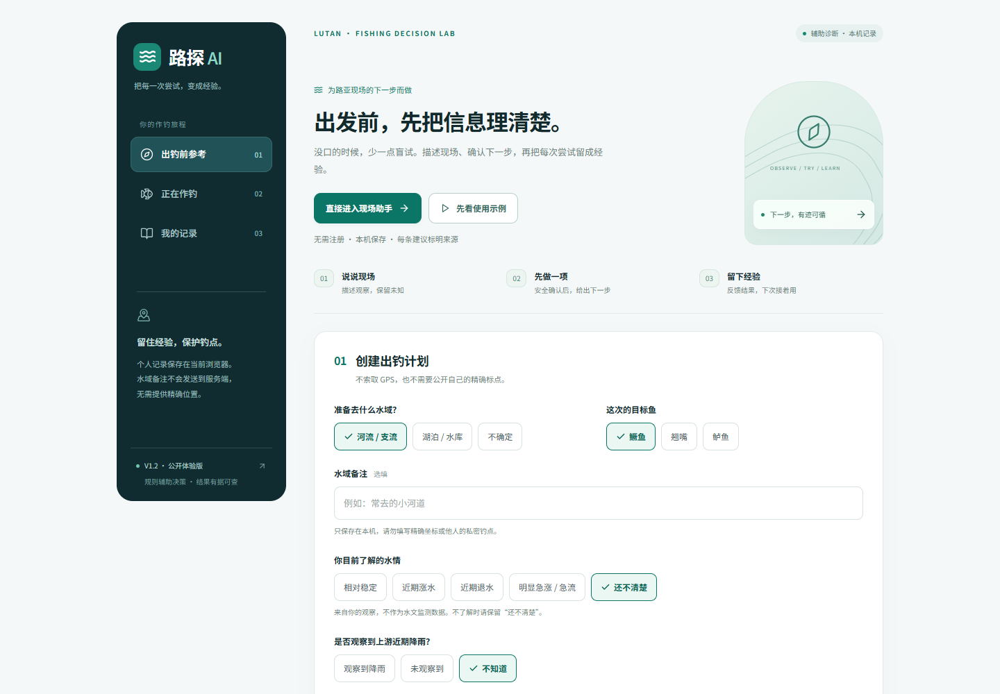
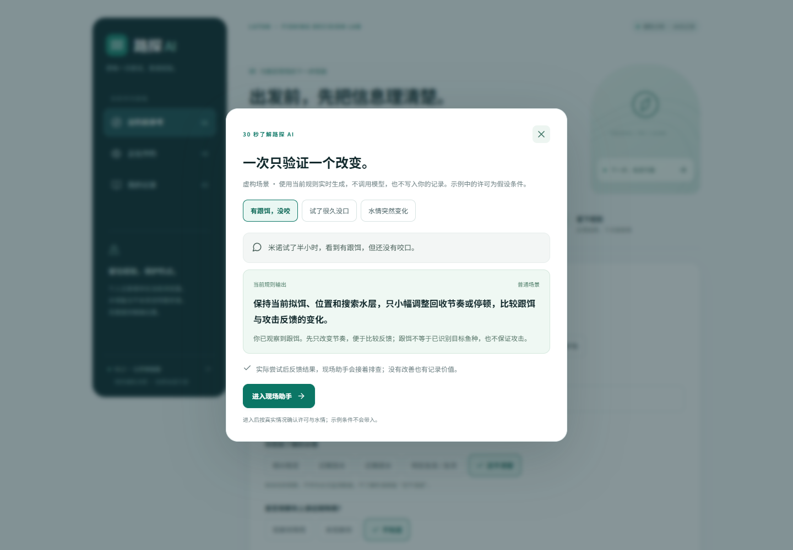

源文件：README.md
路探 AI
没口的时候，先把下一步想清楚。
一个面向淡水路亚现场的决策助手：描述看到的情况，获得一项可验证的行动，反馈尝试结果，把经验留到下一次。
在线体验 · 真实 DeepSeek 联调记录 · 模型与功能说明

可以怎么用
- 出钓前：整理水域、目标与许可信息，分清已知和待核实项。
- 正在作钓：用文字描述现场，可附一张照片；助手先补充缺失信息，再给出一项行动。实际尝试后继续反馈，避免反复推荐已经失败的方向。原有三步表单也可以使用。
- 我的记录：恢复会话、复用条件、筛选和导出记录。数据保存在当前浏览器，无需注册。
第一次打开可以点击“先看使用示例”。示例使用虚构场景与当前规则，不调用模型，不写入个人历史，也不会把示例的许可条件带入真实使用。

作品重点
路探 AI 把“给一个回答”做成了“观察 → 单项尝试 → 反馈 → 继续排查”的流程。三个页面串起准备、现场与复盘，桌面与手机均可使用。
技术栈为 React / TypeScript / Vite / Express / Zod。前后端共用规则与 Schema，模型通过服务端适配器接入。安全水情、禁钓和许可未知先由规则处理，不进入模型；普通场景才允许模型在限定依据与行动范围内辅助解释。输出校验失败、超时或额度不足时，结果明确标注为规则回退。
本地生产环境仍由 Express 同时提供页面和 API；在线托管增加轻量传输适配，共用同一套业务服务。在线模型调用使用持久化共享计数器，数据库仅保存日期与次数，个人会话仍保存在浏览器。
真实进度：已接通真实 DeepSeek，并完成公开授权河岸照片的多模态分析、模型自主调用 get_session_history / get_weather、连续三轮决策的真实联调。第一轮没有调用工具，第二轮实际读取上轮尝试，第三轮根据新增跟饵观察改变策略。原始记录 · 浏览器演示步骤。这些是合成场景与公开示例照片，不是实钓效果；没有鱼群、水位数据库或渔获改善数据。
本轮完整成功演示在本机通过真实接口完成；公网也已执行图片分析与历史工具，但部分模型结果会回退规则，Open-Meteo 当前对云端请求返回 HTTP 429，公网天气尚未验证成功。公网天气实际结果。没有用本机成功数据冒充云端天气。
公开版已上线：2026-11-16 从未登录的 Chrome 会话完成一次真实 deepseek-flash 交互，模型处理耗时 1833 ms；口语跟饵识别、规则依据约束、安全门控、来源标记、刷新恢复和记录列表均可用。本次线上原始记录。公开体验共用每天 100 次模型请求的额度，用完后继续提供明确标注的规则建议。
本地启动
需要 Node.js 22.12+。
npm ci
npm run dev
打开 http://127.0.0.1:5173。Windows 也可以双击 Start-LutanAI.cmd。不配置密钥即可使用规则与本机记录。
接入自己的 DeepSeek：参考 .env.deepseek.example，在本机 .env 或服务端环境设置以下内容后重启。密钥只放服务端。
LLM_ENABLED=true
LLM_PROVIDER=deepseek
LLM_MODEL=deepseek-flash
DEEPSEEK_API_KEY=
LLM_MAX_OUTPUT_TOKENS=1024
生产环境运行 npm run build、npm start，默认地址 http://127.0.0.1:8787；容器或云服务通过 HOST=0.0.0.0 与 PORT 配置监听。在线域名与本机地址的浏览器记录相互独立。
开发检查：npm run typecheck、npm test、npm run evaluate、npm run test:e2e。常规自动测试使用模拟模型，不产生真实模型费用；真实联调需显式启用。
早期需求、原型与研究材料保留在项目中，详细实现说明位于 docs/。公开演示和合成用例均不代表真实用户反馈或实钓效果。